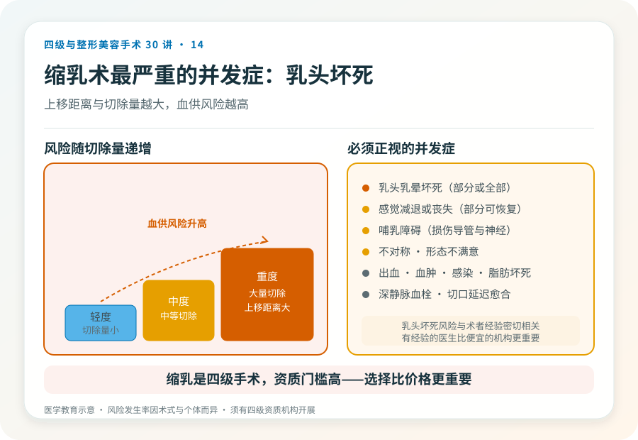
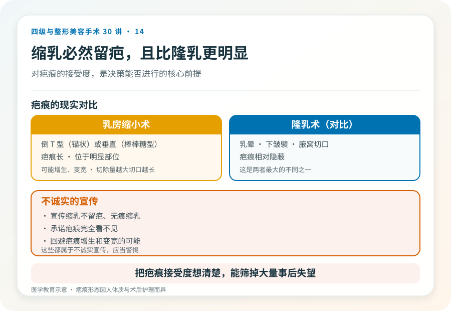

先说结论：乳房缩小术（缩乳术）是四级手术，针对乳房过度肥大引起的躯体症状和外观困扰。它不仅是为了“好看”，很多患者是因肩颈痛、背部痛、乳房下皱襞皮肤糜烂、运动受限、姿势异常而寻求手术，是功能改善为主的决策。手术涉及大量组织切除、乳头乳晕复合体的重新定位，创伤大、留疤明显、可能影响感觉和哺乳。
它解决的功能问题常被低估
乳房过度肥大（巨乳症）带来的不仅是外观：
- 颈肩背痛：长期负重引起的慢性疼痛。
- 皮肤问题：乳房下皱襞潮湿、糜烂、湿疹、反复感染。
- 姿势异常：驼背、肩部勒痕。
- 运动受限：影响日常生活和运动。
- 心理负担：他人目光、自卑、社交回避。
这些是真实的健康问题，不是“矫情”。所以乳房缩小术在很多时候是功能性手术，医保或商业保险在某些情况下可能覆盖（具体以属地政策和保险条款为准，需另行核验）。
手术大致怎么做
乳房缩小术通常在全身麻醉下进行。基本原理是切除多余的皮肤、脂肪和腺体组织，将乳头乳晕复合体上移到新位置，重塑乳房形态。常见术式根据切口形态分为倒 T 型（锚状）、垂直疤痕（棒棒糖型）等，切除量越大、下垂越重，切口越长。手术通常需要住院。
几个必须正视的风险
- 乳头乳晕坏死：这是乳房缩小术最严重的并发症之一。乳头乳晕复合体上移距离越大、切除量越大，血供风险越高，严重时部分或全部坏死。
- 感觉改变或丧失：乳头乳晕感觉可能减退或丧失，部分可恢复，部分长期存在。
- 哺乳障碍：手术可能损伤乳腺导管和神经，影响日后哺乳。有生育计划者需与医生讨论保留哺乳功能的术式。
- 不对称、形态不满意：左右切除量、愈合差异可致不对称。
- 瘢痕：会留下明显疤痕（倒 T 型或垂直），可能增生、变宽，是决策的核心考量之一。
- 出血、血肿、感染、脂肪坏死。
- 深静脉血栓与肺栓塞：与体位和制动有关。
- 伤口延迟愈合：尤以切口交汇处（T 字交点）。
- 日后可能需要修整：形态调整或疤痕修整。
哪些人适合、哪些不适合
适合：
- 乳房过度肥大引起明确躯体症状，保守治疗无效。
- 体重相对稳定（重度肥胖建议先减重）。
- 生育哺乳计划已完成或愿意接受哺乳影响。
- 能接受疤痕和恢复期。
不适合：
- 体重仍在大幅波动、重度肥胖未干预。
- 有明确近期哺乳计划且不能接受影响。
- 对疤痕完全不能接受。
- 凝血异常、未控制的慢性病、不能耐受全身麻醉。
关于疤痕的诚实
乳房缩小术必然留疤，且疤痕较长、位于明显部位。这是它和隆乳最大的不同之一，隆乳疤痕相对隐蔽，缩乳疤痕更明显。任何宣传“缩乳不留疤”或“无痕缩乳”的都不诚实。对疤痕的接受度，是决策能否进行的核心前提。
决策前的硬要求
面诊乳房缩小，至少做到：选择有四级手术资质的机构和主刀（这是四级手术，资质门槛高）；当面评估肥大程度、下垂程度、症状和诉求；讨论术式、切口、切除量、乳头血供风险评估；理解疤痕、感觉和哺乳的现实；确认机构的麻醉、血库和急救条件。乳房缩小术的乳头坏死风险与术者经验密切相关，选择有经验的医生比选择便宜的机构更重要。
本文用于健康教育，不能替代面诊和个体化评估；乳房缩小术须在有相应资质的医疗机构由具备权限的医师开展。